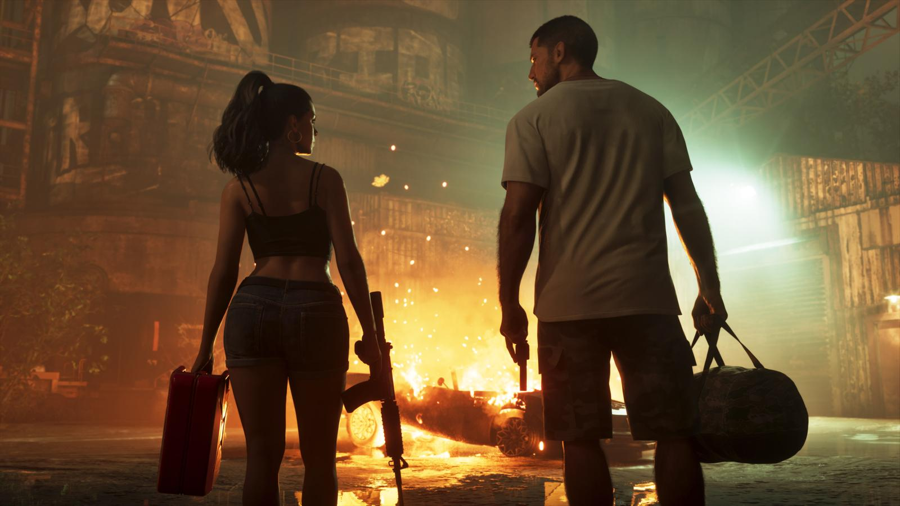
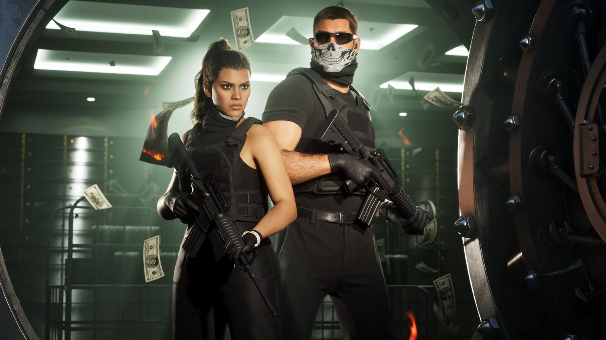
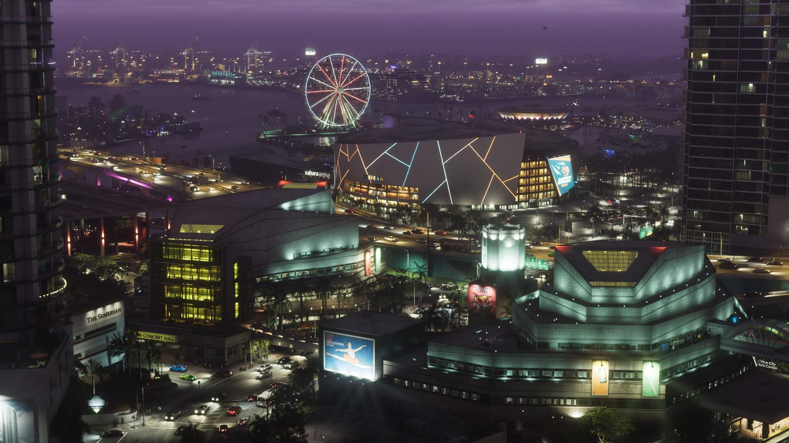

Сюжет GTA 6: о чём игра
Опубликовано:

- Главные герои — пара Джейсон и Лусия.
- Завязка: лёгкое дело идёт не по плану.
- Герои оказываются в центре заговора по всему штату Леонида.
- Место действия — Вайс-Сити и штат Леонида.
Завязка
Джейсон и Лусия всегда знали, что жизнь играет против них. Когда лёгкое дело идёт не так, пара оказывается на «тёмной стороне самого солнечного места Америки» — в центре преступного заговора, который тянется через весь штат Леонида. Чтобы выбраться живыми, им придётся полагаться друг на друга как никогда.

Герои
Лусия Каминос только что вышла из тюрьмы и хочет той хорошей жизни, о которой мечтала её мать. Джейсон Дюваль вырос среди мошенников, служил в армии и работал на наркокурьеров в Кис. Подробно — Лусия Каминос — главная героиня GTA 6 и Джейсон Дюваль — главный герой GTA 6.
Место действия
Штат Леонида — вымышленный аналог Флориды с городом Вайс-Сити. Все регионы — в статье Карта GTA 6: штат Леонида и все регионы.

Источники: Rockstar Games — официальный сайт GTA VI (rockstargames.com/VI), Rockstar Newswire, Rockstar Store.
Разборы кадров, слухи и факты за 30 секунд. Подписывайтесь:
YouTubeInstagramTikTok